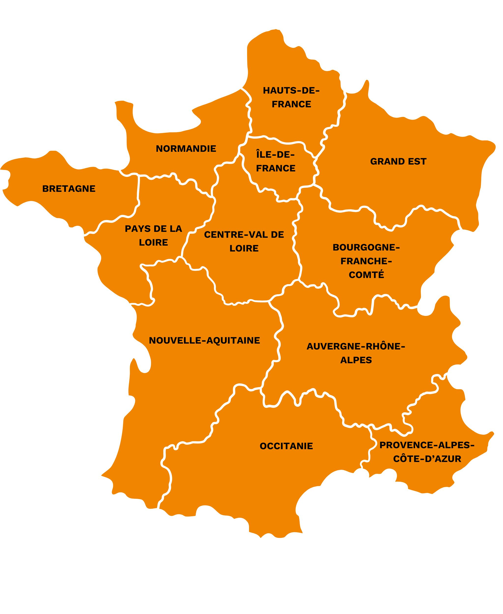

<!DOCTYPE html>
<html lang="en">
<head>
    <meta charset="UTF-8">
    <meta name="viewport" content="width=, initial-scale=1.0">
    <title>Document</title>
</head>
<body>
    
<!-- <div style="
    max-height: 2048px;
    background-image: url(./map.jpg);
    background-size: cover; 
    background-position: center; 
    display: flex; 
    justify-content: center; 
    align-items: center;">
</div> -->
<!-- <div style="
    height: 500px;
    width: 50%;
    justify-content: center; 
    align-items: center;
    background: red;"> -->


    <!-- <div style="
    position: relative; 
    max-width: 2048px; /* Ajuste la taille max si nécessaire */
    margin: auto; 
    overflow: hidden;
    background-image: url(./map.jpg); 
    background-size: cover; 
    background-position: center; 
    padding-top: 122%;
    border: 1px solid black;">

    

    </div> -->
<!-- </div> -->


<!-- <div style="
  height: 300px; 
  width: 100%; 
  border: 2px solid red; 
  overflow: hidden;
  display: flex;"> 

   <div style="
   border: 1px solid green;
   position: relative;
   display: inline-block;
   ">
         

         
        </div>
    </div> -->

    <div style="
    position: relative;
    width: 100%;
    max-height: 800px;
    /* max-width: 800px; Largeur de la grande image ou conteneur */
    padding-top: 122%; /* Ratio de la grande image */
    background-image: url(./map.jpg);
    background-size: cover;
    background-position: top left;
    background-repeat: no-repeat;
    border: 2px solid red;">
  
    <!-- Petite image -->
    
  </div>

</body>
</html>

<!--       background-color: red;   -->